Bucharest University of Economic Studies, Department of Statistics and Econometrics Romanian Academy, Institute for Economic Forecasting
Machine learning (ML) promises more accurate forecasts of electricity prices, and many vendors sell it on that promise. This lecture asks a sober question: on the Romanian day-ahead market, Piața pentru Ziua Următoare (PZU), run by the Romanian electricity and gas market operator (OPCOM), do a tuned deep neural network (DNN), gradient-boosted trees and a pretrained foundation model actually forecast the 24 hourly prices of tomorrow better than the statistical benchmarks of Lecture 2? And if they do, by how much, at what cost, and can we explain why?
The answer matters to every company that trades on the PZU. A supplier buys the hours it needs a day ahead, a producer decides when to sell, a battery owner decides when to charge and when to discharge. Each of them pays for forecast errors in euro per megawatt-hour (EUR/MWh). A model that looks better than it is, because it was evaluated on the wrong days or with information that was not available at the auction, costs money twice: once when it is bought and again when it fails in production.
The lecture uses the same real data and the same test year as Lecture 2, the hourly Romanian day-ahead prices with load, wind and solar generation and other fundamentals, downloaded from energy-charts.info (Fraunhofer ISE) and Yahoo Finance, up to 31 Oct 2026. It adds one ingredient that machine learning needs: a separate validation year on which the settings of the models are chosen before the test year is opened.
What you will be able to do
Set up an honest machine learning experiment: training, validation and test samples in time order, and only the information known at 12:00 Central European Time (CET) on the day before delivery.
Build and tune a deep neural network and gradient-boosted trees for the 24 day-ahead prices of Romania, and try a pretrained foundation model.
Compare them with the benchmarks of Lecture 2 on the same test year, with the mean absolute error (MAE), the root mean squared error (RMSE), the relative MAE (rMAE) and the Diebold–Mariano (DM) test, and combine machine learning with the statistical models.
Explain the forecasts, predict price spikes and negative prices, and recognise the pitfalls that make a model look better than it is.
Lecture plan
Machine learning, evaluated honestlyFlexible models can learn patterns that a linear model misses, but they can also learn the noise of the past; this section sets the rules that keep the evaluation honest.
Deep neural networksA neural network is a chain of regressions, each followed by a non-linear bend, trained by small steps against the error.
Gradient boosting and foundation modelsTrees ask yes/no questions about the inputs and capture thresholds and interactions for free; boosting adds many small trees, each correcting the errors of the previous ones.
Explaining the forecastsA forecast that cannot be explained is hard to trust and impossible to audit.
Spikes, negative prices and a case studyFor many users the extreme hours matter more than the average error: a battery or a flexible consumer earns its money in the hours of spikes and negative prices.
Pitfalls that flatter a modelMost claims of large gains from machine learning come from evaluation mistakes rather than from better models.
Wrap-upThe lecture closes with five questions that a manager may face, a summary of the results, the research of our group and resources for further study.
AppendixThe appendix gives the derivations behind the training of the network and of the trees, the conversion of SHAP values to euro, and the search spaces of the hyperparameters.
Machine learning, evaluated honestly
Flexible models can learn patterns that a linear model misses, but they can also learn the noise of the past; this section sets the rules that keep the evaluation honest. Data are split into training, validation and test samples in time order, and settings are chosen by random search on the validation year only.
Same data, same test year as Lecture 2, plus a validation year
The target is the hourly day-ahead price of the Romania (RO) bidding zone on the PZU. The inputs are those of Lecture 2: prices up to day \(d-1\); load, wind and solar generation, hydro, nuclear and net imports up to day \(d-2\), from the European Network of Transmission System Operators for Electricity (ENTSO-E); and the price of carbon, the European Union (EU) emission allowance (EUA), through an exchange-traded commodity (ETC). The data run to 31 Oct 2026 and were downloaded on 4 Nov 2026 from energy-charts.info, the data portal of the Fraunhofer Institute for Solar Energy Systems (ISE), and from Yahoo Finance.
Time is cut into three pieces. Training starts on 8 Jan 2022 and grows by one month at each refit. The validation year, 1 Nov 2024 – 31 Oct 2025, is used only to choose the settings of the models. The test year, 1 Nov 2025 – 31 Oct 2026, has 8,760 hours, and on it the models are refitted monthly.
The benchmarks are the forecasts of Lecture 2, read from its files: the naive model; the autoregressive model with exogenous variables (ARX); the least absolute shrinkage and selection operator (LASSO); the LASSO-estimated autoregression (LEAR); ARX and LEAR averaged across calibration windows (AW-ARX and AW-LEAR); and the ensemble of 4 models. Because the test year is the same, every error in this lecture can be compared directly with Lecture 2.
Machine learning buys flexibility and pays for it with variance
A flexible model can learn thresholds and interactions that LEAR misses, but it can also learn the noise of the training years. Every model in this lecture, statistical or not, is estimated by the same principle: minimise the fit to the training days plus a penalty on complexity,
\[\hat\theta=\arg\min_{\theta}\ \underbrace{\frac1n\sum_{i=1}^{n}\ell\big(Y_i,f_\theta(\mathbf x_i)\big)}_{\text{fit to the training days}}+\underbrace{\lambda\,\Omega(\theta)}_{\text{penalty}}\]
(7.1)
where \(f_\theta\) is the model with parameters \(\theta\), \(\mathbf x_i\) the inputs known at gate closure, \(Y_i\) the price, \(\ell\) the loss (here the absolute error), \(n\) the number of training observations, \(\Omega\) the complexity of the model and \(\lambda\) its weight.
The difference between models is how much flexibility they have. LEAR has at most 247 coefficients per hour. Our DNN has 141,336 parameters, for 1,727 training days at the last refit. With so many parameters, the error on the training days says nothing about the future: only data the model has not seen can judge it. The penalty in (7.1) and the stopping rules of the next section limit how far the network can bend towards the noise, but the final judgement always comes from days kept aside.
In practice: ask a vendor how many parameters the model has per day of history, and on which days its error was measured.
Three samples in time order: training, validation, test
The chart shows how the history is cut. On the validation year, 25 settings per model are compared, with the models refitted every 3 months; the setting with the lowest MAE is frozen before the test year starts. On the test year, the models are refitted at the start of each month on all earlier days.
The test year is never used to choose anything. It is the same year as in Lecture 2, so the errors are directly comparable. The order matters: shuffling days between the samples, as ordinary cross-validation does, would let the model learn from days that come after the ones it forecasts (Bergmeir and Benítez, 2012). The last section of the lecture measures how much such a mistake flatters a model.
In practice: treat the test year like a sealed envelope: it is opened once, after every choice is made.
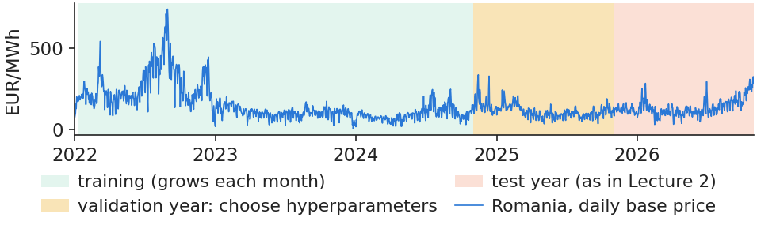
Daily base price of Romania, 2022–2026, with the training, validation and test periods shaded.
Source: energy-charts.info (Fraunhofer ISE): OPCOM prices. Data: daily base price, 2022-01-01 to 2026-10-31.
Settings such as the number of neurons or of trees are not estimated by the model; we try several and keep the one that forecasts best on unseen days. Formally,
where \(\gamma\) is one setting (a vector of hyperparameters), \(\gamma_0\) the setting of Lecture 2 and the others drawn at random, \(\mathcal V\) the set of days of the validation year, \(|\mathcal V|\) their number, \(P_{d,h}\) the price of day \(d\) and hour \(h\), and \(\hat P_{d,h}(\gamma)\) its forecast with setting \(\gamma\).
Why random draws rather than a full grid? Only a few settings really matter, and random draws cover each of them better for the same budget (Bergstra and Bengio, 2012). Our budget is 24 random settings plus the Lecture 2 setting, for each of the two models, and the whole search takes 7.3 minutes on one core of the central processing unit (CPU). The search spaces and the chosen values are listed in Appendix D.
In practice: a modest, documented search is enough. A search without a separate validation sample is not a search but a leak.
Section summary
Machine learning is judged only on data it has not seen. Settings are chosen on a validation year, and the test year is opened once, after every choice is made.
Deep neural networks
A neural network is a chain of regressions, each followed by a non-linear bend, trained by small steps against the error. This section builds the network used in the lecture, shows how it is trained and stopped in time, and measures what tuning gains.
A neural network stacks regressions, each followed by a bend
where \(\mathbf x_d\) are the inputs of day \(d\) (prices, load, wind and solar, fundamentals, weekday), \(W_1\) and \(W_2\) the weights, \(\mathbf b_1\) and \(\mathbf b_2\) the intercepts, \(\mathbf z\) the outputs of the hidden neurons, \(\phi\) the activation function, either the rectified linear unit (ReLU) or its smooth version, softplus ((7.4)), and \(\hat{\mathbf Y}_d\) the asinh-scaled prices, as in Lecture 2.
The network chosen on the validation year has 251 inputs, one hidden layer of 512 neurons with the softplus activation, and 24 outputs: 141,336 parameters in total. Two-layer networks did worse on validation. It is clearly better than the multilayer perceptron (MLP) of Lecture 2: on the test year its MAE is 22.95 EUR/MWh, against 25.54 for the MLP.
In practice: a network is a regression with many more coefficients: it needs the same data discipline, not less.
Training: small steps against the error, stopped in time
where \(B\) is a mini-batch of 64 days, \(Y_{d,h}\) and \(\hat Y_{d,h}(\theta)\) the scaled price and its forecast, \(\eta\) the learning rate (\(3\cdot10^{-4}\)) and \(\widehat{\nabla\mathcal L}\) the gradient rescaled by the Adam method (Kingma and Ba, 2015; details in Appendix A). One epoch is one pass over all training days.
To decide when to stop, the network is trained on the first 85% of the training days while its error is watched on the last 15%. The best epoch is kept, and the network is then refitted on all days for that many epochs. On our data the epochs kept have a median of 56 and range from 23 to 92, over 12 refits \(\times\) 4 seeds. A second guard against memorising is dropout: during training each neuron is switched off at random with probability 0.1 (Srivastava et al., 2014).
In practice: the stopping rule uses only past days: it is part of the model, so it is checked like the rest.
Early stopping: stop when the error on recent days stops falling
The chart shows the learning curve of the refit for Oct 2026. The error on the training days keeps falling, but the error on the last 15% of days reaches its lowest value at epoch 51, at 24.50 EUR/MWh, and training stops at epoch 76.
After that point the network fits the past better and the recent days worse: it starts to memorise. The gap between the two curves is the variance of (7.1) made visible. Early stopping keeps the network at the point where it has learnt the regular patterns of the market but not yet the accidents of the training years.
In practice: if a vendor cannot show you this curve, the network was probably trained until it fitted the past.
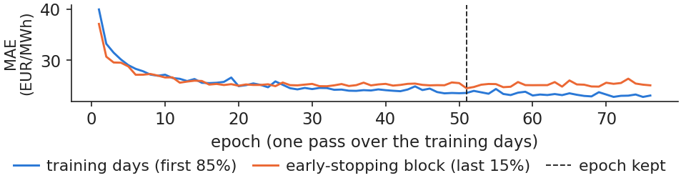
Training error and error on the last 15% of training days by epoch, chosen DNN, refit for Oct 2026, seed 1; the best epoch is marked.
The chart ranks the 25 settings tried for each model by their MAE on the validation year. For the DNN, the best setting reaches 22.59 EUR/MWh, while the setting of Lecture 2 has 24.24 and ranks 14 of 25. For eXtreme Gradient Boosting (XGBoost), the best setting reaches 22.76 against 23.83 for the Lecture 2 setting, which also ranks 14.
All 25 settings of both models beat the naive model on the validation year (26.90 EUR/MWh), so the models are useful even when badly tuned; but tuning is what brings them close to the statistical benchmarks.
In practice: budget one validation year for tuning before you trust any machine-learning forecast.
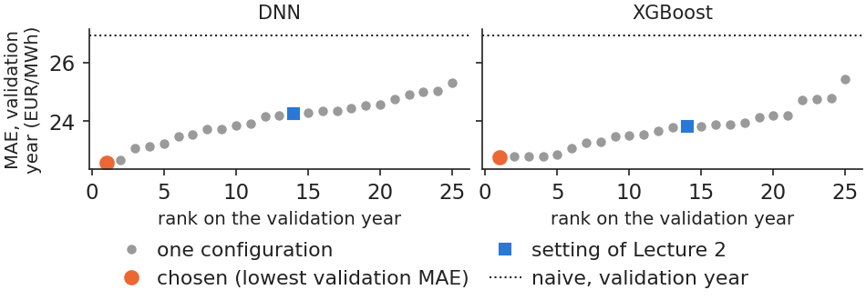
Validation MAE of the 25 settings of the DNN and of XGBoost, sorted, with the Lecture 2 setting and the naive model marked.
Source: energy-charts.info (Fraunhofer ISE); Yahoo Finance (EUA). Data: validation year 2024-11-01 to 2025-10-31, quarterly refits.
Tuned on the validation year, the network improves clearly on the MLP of Lecture 2. Early stopping and dropout keep it from memorising the past.
Gradient boosting and foundation models
Trees ask yes/no questions about the inputs and capture thresholds and interactions for free; boosting adds many small trees, each correcting the errors of the previous ones. The section ends with foundation models, pretrained networks that forecast Romanian prices without any training on them.
A regression tree cuts the inputs into boxes and predicts one price per box
where \(R_j\) is leaf \(j\) (a box in the space of inputs), \(w_j\) its value, \(\mathbb 1\{\cdot\}\) the indicator function, \(G\) and \(H\) the sums of the first and second derivatives of the loss over the observations that go left (\(L\)) or right (\(R\)) of a candidate split, and \(\lambda\) and \(\gamma\) penalties on the leaf values and on the number of leaves. The tree is grown by keeping, at each step, the split with the largest gain ((7.8)); Appendix B shows where the formula comes from.
On our data, in the refit for Oct 2026, the first question of the first tree is: is the price of \(d-1\), same hour, below 119.5 EUR/MWh? That tree has 233 leaves, and the model adds up 1,500 such trees.
In practice: a tree speaks the language of a trading desk: above a level yesterday, a premium tonight.
Gradient boosting: each new tree corrects the remaining errors
Boosting fits a small tree to what is still wrong, adds it with a small weight and repeats, here a thousand times and more (Friedman, 2001; Chen and Guestrin, 2016):
where \(F_m\) is the forecast after \(m\) trees, \(F_M\) the final forecast after all \(M\) trees, \(f_m\) tree \(m\) with \(J_m\) leaves and leaf values \(w_{mj}\), \(\eta\) the learning rate, \(w_j^{*}\) the optimal value of leaf \(j\) (Appendix B), \(G_j\) and \(H_j\) the sums of first and second derivatives of the loss in that leaf, and \(\ell\) the absolute error.
The setting chosen on the validation year has 1,500 trees of depth 8, \(\eta\) = 0.02, each tree fitted on a fraction 0.8 of the rows. On the test year, the tuned XGBoost has MAE 23.26 EUR/MWh, against 24.05 for the untuned gradient boosting machine (GBM) of Lecture 2, a significant gain (DM \(p<0.001\)). AW-LEAR, at 22.53, is still more accurate (DM \(p\) = 0.016).
In practice: tuning matters more than the software: the same kind of trees gained almost one euro per MWh from good settings.
Foundation models forecast Romanian prices with no training at all
Chronos models were trained by Amazon on large collections of time series (Ansari et al., 2024; Ansari et al., 2025). We give them only the recent prices and ask for the next 24 hours, without any training on Romanian data (zero-shot):
where \(P_{t-2047},\dots,P_t\) are the last 2048 hourly prices, up to the end of \(d-1\) (85 days), \(g\) the pretrained network, used as it is, and \(\hat q^{\tau}_{d,h}\) the forecast quantile of level \(\tau\) for hour \(h\) of day \(d\). The point forecast is the median \(\hat q^{0.5}\).
On the test year, with prices only and no fundamentals, Chronos-2 has MAE 20.82 EUR/MWh, Chronos-Bolt 22.15 and AW-LEAR 22.53. Chronos-2 is more accurate than AW-LEAR (DM \(p<0.001\)), and in all 24 hours. The result is robust: on the validation year Chronos-2 had 21.05, against 22.59 for the best tuned DNN, and the model was published in Oct 2025, before the test year, so it could not have seen these prices.
In practice: test a foundation model before building your own network: it is cheap, and here it was the most accurate single model.
The chart compares, hour by hour, the MAE of the two Chronos models with that of AW-LEAR on the test year. Chronos-2 is below AW-LEAR in every hour. Chronos-Bolt, smaller and older, is level with AW-LEAR (DM \(p\) = 0.220).
The quantiles of (7.11) also give a forecast band. The 10%–90% band of Chronos-2 should hold 80% of the prices, but it holds 76.5%: the band is too narrow, so the model is overconfident about its own uncertainty.
In practice: use the median, and recalibrate the bands (Lecture 2) before sizing risk with them.
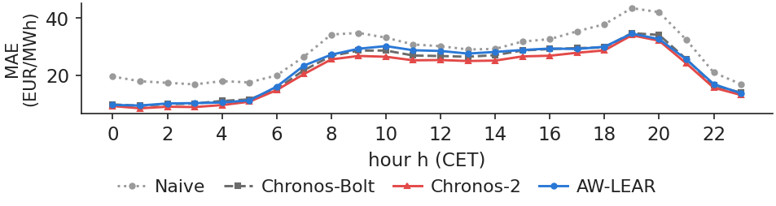
MAE by hour of the day on the test year for Chronos-2, Chronos-Bolt and AW-LEAR.
Source: energy-charts.info (Fraunhofer ISE): OPCOM prices. Data: test year 2025-11-01 to 2026-10-31; zero-shot, context = last 2048 hourly prices.
At the AIDA 2026 conference (Bucharest University of Economic Studies, June 2026), Rafał Weron's keynote (slides) retraced how electricity price models evolved, from ARX models and averaging across calibration windows to LEAR and then to deep and interpretable neural networks. The findings and numbers below are those printed on the conference slides.
Deep networks against LEAR. In the open benchmark that accompanies the LEAR and DNN codes of the epftoolbox library, the DNN had a lower rMAE than LEAR in all five markets shown (Lago et al., 2021).
Interpretable networks. NBEATSx splits the forecast into trend, seasonality and exogenous blocks, so that a deep network can be read like a decomposition (Olivares et al., 2023).
Zero-shot models. Pretrained models used without retraining were compared with LEAR and distributional DNN models on 24 hourly day-ahead prices, with a 4-year rolling training window and a test from 2021 to 2025. The RMSE in 2022 was 45.71 for LEAR with conformal prediction, 41.07 for Chronos 2 and 34.39 for TabPFN v3.0 ts; in 2025 it was 20.38, 20.58 and 17.66. A version of TabPFN had the lowest RMSE in every year, but rankings move: TabPFN v2.0 had an RMSE of 68.85 in 2022 and 17.52 in 2025.
Our own test year points the same way: Chronos-2, used zero-shot, is the most accurate single model (MAE 20.82 EUR/MWh against 22.53 for AW-LEAR). The conference results add the warning that one year is not enough to rank models.
In practice: keep LEAR as the benchmark and test zero-shot models next to it, over several years.
AIDA 2026: four generations of models on 27 European price series
At the same conference, Alexandru-Victor Andrei (slides) presented a comparison of four generations of time series forecasting methods on electricity prices (Andrei, Velev, Toma, Pele & Lessmann, 2024). The numbers below are those printed on the slides.
Four generations. Eleven models were compared: econometric models such as the autoregressive integrated moving average (ARIMA); deep learning models (DLinear, NLinear, TSMixer); transformers (Autoformer, Basisformer, Informer, PatchTST, Quatformer); and pretrained models adapted from large language models (LLM), Chronos and TimesFM, used zero-shot.
Data and walk-forward validation. Wholesale electricity prices for 27 European Union (EU) countries come from the Ember platform (originally ENTSO-E). Each model reads 96 time steps and forecasts the next 96; each training window has 2000 hours (83 days) and each test window 500 hours (20 days), and the windows roll forward. Models are ranked by the score (100·SMAPE + RMSE)/2, where SMAPE is the symmetric mean absolute percentage error.
Results. PatchTST ranks first or second in all 27 countries. For Romania the ranks are PatchTST 1, TimesFM 2, Chronos 8 and ARIMA 9; for Germany PatchTST 1, TimesFM 5 and Chronos 10. Transformers (PatchTST) and foundation models (TimesFM) lead, but the gains are model-specific, not uniform across the fourth generation.
In this lecture the newer Chronos-2 (2025), used zero-shot on Romanian day-ahead prices, is the most accurate single model (MAE 20.82 EUR/MWh).
In practice: compare model generations with walk-forward validation on several markets before choosing one.
Section summary
Tuned boosted trees improve on the GBM of Lecture 2 but stay behind AW-LEAR. The pretrained Chronos-2, with no training at all, is more accurate than AW-LEAR in every hour.
Honest comparison, combination and cost
All models are now compared on the same test year, with the same error measures and DM tests against AW-LEAR. The section shows that combinations of machine learning and statistical models are significantly better, explains why averaging works, and weighs accuracy against computing cost.
The table brings together every model on the test year. The RMSE penalises large errors more than the MAE; the rMAE divides the MAE by that of the naive model; the column "vs AW-LEAR" gives the percentage gain over AW-LEAR; and "DM \(p\)" is the p-value of a one-sided test that the model is more accurate than AW-LEAR, computed on the daily mean absolute error with a Newey–West variance, as in Lecture 2 (Diebold and Mariano, 1995).
Model
MAE
RMSE
rMAE
vs AW-LEAR, %
DM p
Naive
27.82
44.54
1.000
−23.5
–
AW-ARX
22.30
36.34
0.802
+1.0
0.203
AW-LEAR
22.53
36.35
0.810
+0.0
–
Ensemble of 4 (Lecture 2)
22.13
35.76
0.795
+1.8
0.014
GBM (Lecture 2)
24.05
37.73
0.864
−6.7
1.000
MLP (Lecture 2)
25.54
40.05
0.918
−13.3
1.000
XGBoost, tuned
23.26
36.94
0.836
−3.2
0.984
DNN, tuned
22.95
36.42
0.825
−1.8
0.944
Chronos-Bolt, zero-shot
22.15
35.65
0.796
+1.7
0.220
Chronos-2, zero-shot
20.82
34.32
0.748
+7.6
<0.001
AW-LEAR + DNN + XGBoost
21.97
35.42
0.790
+2.5
0.001
AW-ARX + AW-LEAR + DNN + XGBoost
21.69
35.25
0.779
+3.8
<0.001
AW-LEAR + Chronos-2
20.81
34.11
0.748
+7.6
–
Ensemble of 5 (with Chronos-2)
21.12
34.50
0.759
+6.3
<0.001
Three lessons stand out. Tuned, the DNN and XGBoost are better than their Lecture 2 versions but, alone, still slightly worse than AW-LEAR. Chronos-2, with no training, is the best single model, 7.6% below AW-LEAR. And every combination that mixes machine learning with the statistical models beats AW-LEAR significantly.
DM tests: combinations with ML beat AW-LEAR significantly
The chart is a matrix of one-sided DM tests over the 365 days of the test year: each cell gives the p-value of the test that the model in the row is more accurate than the model in the column. Small p-values mark wins that are unlikely to be due to chance.
The combination AW-LEAR + DNN + XGBoost beats AW-LEAR (\(p\) = 0.001), although neither machine learning model does so alone. Adding AW-ARX gives MAE 21.69, better than the ensemble of Lecture 2 (\(p<0.001\)). By contrast, adding AW-LEAR to Chronos-2 changes nothing (\(p\) = 0.491): on the hard days the two models make similar errors, so averaging them brings no gain in accuracy.
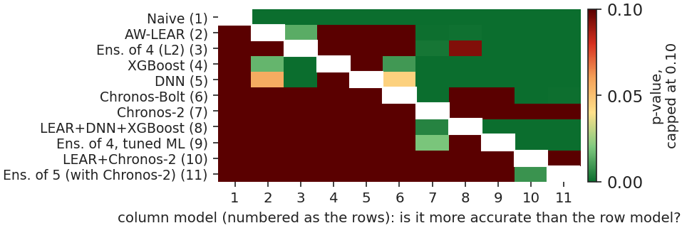
Matrix of one-sided DM p-values between all models on the test year (row model more accurate than column model).
Source: energy-charts.info (Fraunhofer ISE); Yahoo Finance (EUA). Data: test year 2025-11-01 to 2026-10-31, 365 days; one-sided p-values.
Why does an average of two models beat both of them? For two forecast errors \(e_1\) and \(e_2\) with standard deviations \(\sigma_1\), \(\sigma_2\) and correlation \(\rho\),
so that, as long as \(\rho<1\), the average errs less than the two models would on average alone (Bates and Granger, 1969). On our data, the correlation of errors with AW-LEAR is 0.94 for the DNN and 0.89 for XGBoost: high, but below one, and that is enough.
The chart shows the MAE of the combination as a function of the weight given to the machine learning model. Equal weights do almost as well as the best weight seen afterwards (0.40). That best weight is only an illustration, since it is read from the test year; in practice it could not have been known in advance.
In practice: average with equal weights before estimating clever weights.
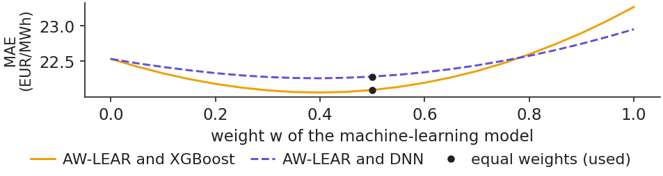
MAE on the test year of the combination of AW-LEAR with a machine learning model, as a function of the weight of the latter; equal weights and the best weight in hindsight are marked.
Source: energy-charts.info (Fraunhofer ISE); Yahoo Finance (EUA). Data: test year 2025-11-01 to 2026-10-31; illustration, the weight is not chosen on the test year.
An annual average can hide months in which a model is much worse. The chart shows the MAE of each model in each month of the test year. Alone, XGBoost and the DNN each beat AW-LEAR in only 3 months; averaged with it, in 10.
All models err more in the same months, January, June and October: the hard days are hard for everyone. This is the reason why the combination helps in the ordinary months but cannot remove the large errors of the difficult ones.
In practice: report accuracy month by month to the risk committee, not only the annual average.
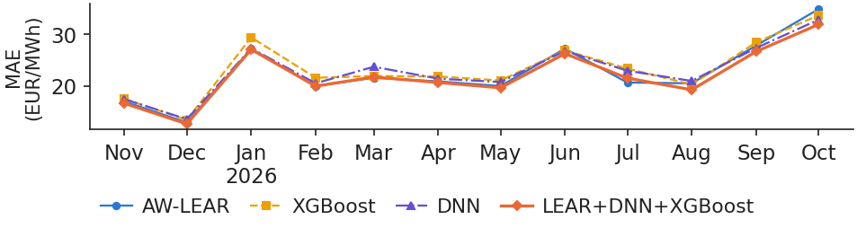
Monthly MAE on the test year of AW-LEAR, the DNN, XGBoost and their combination.
Source: energy-charts.info (Fraunhofer ISE); Yahoo Finance (EUA). Data: test year 2025-11-01 to 2026-10-31.
Accuracy is only half of a model choice; the other half is cost. Over the test year, on one core, AW-LEAR takes 87.6 minutes, because it is refitted for 365 days \(\times\) 3 windows \(\times\) 24 hours. XGBoost takes 2.6 minutes, the DNN 2.7 and Chronos-2 only 0.3, since it is never trained.
These times leave out hidden costs: the search for settings (7.3 minutes), the pretraining of Chronos (paid by others), and above all the people who run the pipeline every day. The comparison turns a common belief around: on this problem the statistical benchmark, re-estimated every day, is the expensive model, and machine learning refitted monthly costs minutes.
In practice: compare models on error per euro of total cost of ownership, not on error alone.
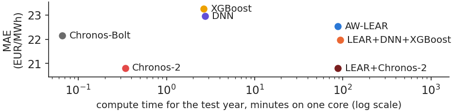
Compute time over the test year (one core of an 18-core laptop) against the gain in MAE over AW-LEAR, by model.
Source: energy-charts.info (Fraunhofer ISE); Yahoo Finance (EUA). Data: test year 2025-11-01 to 2026-10-31; one processor core.
Combinations of machine learning with the statistical models beat AW-LEAR significantly, because their errors are not perfectly correlated. Chronos-2 alone is the most accurate single model, and the machine learning models cost minutes of computing time.
Explaining the forecasts
A forecast that cannot be explained is hard to trust and impossible to audit. This section splits each forecast of the trees into the contributions of its inputs with Shapley values, and measures what the neural network depends on with permutation importance.
Shapley values split each forecast into the contributions of its inputs
The contribution of an input is its average effect when it is added to the model, over all orders in which the inputs could be added (Shapley, 1953; Lundberg et al., 2020):
where \(\phi_j\) is the SHapley Additive exPlanations (SHAP) value of input \(j\), \(S\) a subset of the other inputs, \(|S|\) its size, \(v(S)\) the expected forecast when only the inputs in \(S\) are known, \(\phi_0\) the average forecast, \(\hat f(\mathbf x)\) the forecast for inputs \(\mathbf x\), and \(p\) = 20 the number of inputs.
Shapley values are the only fair split in the game-theory sense, and (7.14) says that they add up exactly to the forecast. On our data, for XGBoost over the 8,760 test hours, the largest gap between \(\hat f\) and \(\phi_0+\sum\phi_j\) is 0.000009. Past prices carry 69.3% of the total contribution.
In practice: ask for the explanation of each alarm, not only for a global ranking.
What drives the trees: yesterday's price at the same hour
The chart ranks the inputs of XGBoost by their mean absolute SHAP value \(|\phi|\) over the test year. The top inputs are the price of \(d-1\) at the same hour, with 32.9% of the mean \(|\phi|\), the price of \(d-7\) at the same hour, with 15.6%, and the day of week, with 9.3%.
Load has 8.5% and wind and solar 2.5%. Their small shares do not mean that these fundamentals are unimportant for the market: they are known only up to \(d-2\), so at gate closure they are old news, already reflected in yesterday's prices. Better inputs, such as forecasts of tomorrow's load and wind, would carry more information.
In practice: buy better inputs first: the load and wind forecasts of the transmission system operator (TSO).
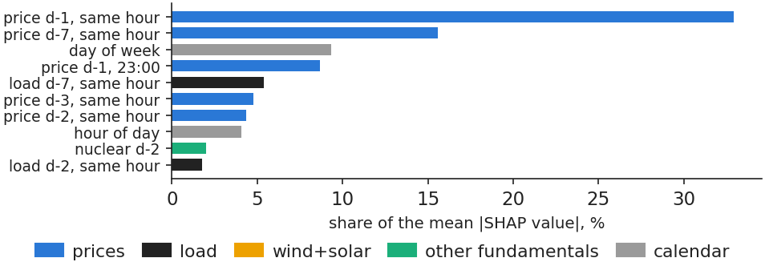
Mean absolute SHAP value of each input of XGBoost, as a share of the total, test year, 8,760 hours.
Source: energy-charts.info (Fraunhofer ISE); Yahoo Finance (EUA). Data: test year 2025-11-01 to 2026-10-31, 8760 hours.
Each point of the chart is one test hour: on the horizontal axis the wind and solar generation of \(d-2\) at that hour, on the vertical axis its SHAP contribution to the forecast. The more wind and solar, the more negative the contribution (correlation −0.64).
The relation is not a straight line. The effect appears above about 2 gigawatts (GW), mostly at midday, and is close to zero below: a threshold that a linear model cannot express, and that trees learn by themselves.
In practice: a solar developer can read here the price discount that its own output helps to create.
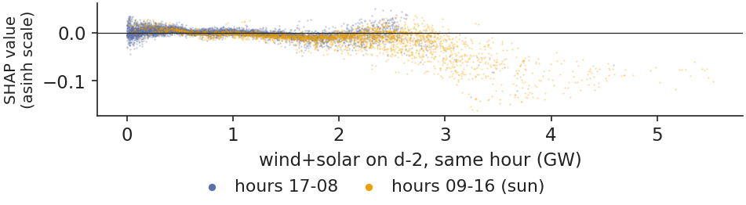
SHAP contribution of wind and solar generation against its level on \(d-2\), one point per test hour.
Source: energy-charts.info (Fraunhofer ISE); Yahoo Finance (EUA). Data: test year 2025-11-01 to 2026-10-31, 8760 hours.
where \(I_b\) is the importance of block of inputs \(b\), \(\text{MAE}_{b\ \text{shuffled}}\) the MAE when the values of block \(b\) are shuffled across test days, and \(\text{MAE}\) the error without shuffling; the result is averaged over 5 permutations.
For the DNN, shuffling the prices of \(d-1\) raises the MAE by 22.82 EUR/MWh, the day of week by 3.66, load by 2.12, while wind and solar change it by −0.08, that is, not at all. The network depends even more than the trees on yesterday's prices.
In practice: monitor the price feed of \(d-1\) first: the network fails without it.
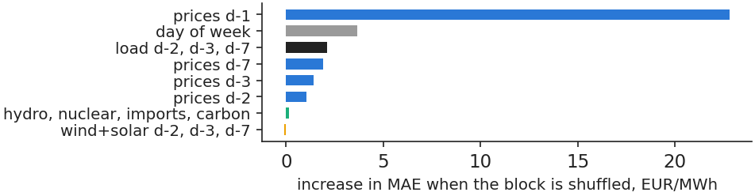
Permutation importance of the input blocks of the DNN on the test year, increase in MAE in EUR/MWh, 5 permutations.
Source: energy-charts.info (Fraunhofer ISE); Yahoo Finance (EUA). Data: test year 2025-11-01 to 2026-10-31.
At the same conference, Roxana Clodnitchi (slides) presented a systematic review of artificial intelligence (AI) in energy finance (Anagnoste et al., 2025). About 700 Web of Science articles were screened and 232 peer-reviewed articles from 2020–2025 were kept and mapped on six pillars of energy finance. The numbers below are those printed on the slides.
Where AI is used. The share of papers using AI or machine learning is 100% for pricing mechanisms and for energy derivatives, 97.5% for energy and financial markets, 93.0% for risk management, 60.4% for green finance and 0% for the corporate finance of energy firms, which relies on panel econometrics.
Which methods. Neural networks dominate: 88.2% of the derivatives papers and 72.1% of the risk-management papers use them.
What is missing. Explainable AI appears in 19.6% of the derivatives papers and in 0–5% of the papers of the other pillars; the review proposes explainable AI and causal machine learning as the next step, for regulators and for policy evaluation.
The SHAP values and the permutation importance of this section are exactly the kind of explanation that the review finds rare.
In practice: ask for the explanation together with the forecast: regulators and boards will ask for it.
Section summary
Both machine learning models rely mostly on yesterday's prices at the same hour. Wind and solar matter only above a threshold, which a linear model cannot capture.
Spikes, negative prices and a case study
For many users the extreme hours matter more than the average error: a battery or a flexible consumer earns its money in the hours of spikes and negative prices. This section defines these events, builds classifiers that give their probability, turns probabilities into decisions with a cost–loss rule and studies the highest price of the test year.
Spikes come in the evening, negative prices at midday
A spike is an hour with a price above \(\theta\), the 90th percentile of the hourly prices of the 12 months before the delivery month. Because the threshold follows the market, it moves over the test year, from 166.8 to 202.4 EUR/MWh. With this definition, 22.1% of test hours are spikes, far more than the one in ten that the definition would give in a stable market; they are most frequent at 19:00, where 57.0% of days have a spike.
Prices at or below zero are the opposite event: 255 hours on 53 days of the test year, mostly around 13:00, when solar generation is at its peak. The chart shows the share of days with each event by hour of the day.
In practice: a battery charges at midday and discharges at 19:00–20:00: the two events are its business model.
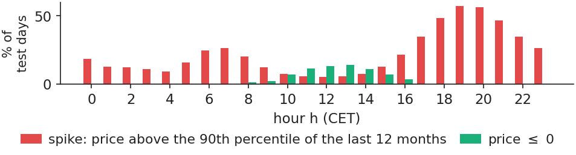
Share of test-year days with a spike and with a price at or below zero, by hour of the day.
Source: energy-charts.info (Fraunhofer ISE): OPCOM prices. Data: test year 2025-11-01 to 2026-10-31.
where \(\hat\pi_{d,h}\) is the forecast probability of a spike in hour \(h\) of day \(d\), \(\theta_d\) the spike threshold, \(\mathbf x_{d,h}\) the inputs, \(S_{d,h}\) equal to 1 if the hour is a spike and 0 otherwise, and \(n\) the number of hours (Brier, 1950). Once probabilities are turned into alerts, precision is the share of alerts that were spikes, recall the share of spikes that got an alert, and F1 their harmonic mean. The area under the curve (AUC) is the probability that a spike hour gets a higher score than a normal hour (Fawcett, 2006).
On our data, XGBoost and logistic classifiers are refitted monthly. Spikes occur in 22.1% of test hours but in only 14.3% of the last training sample. The Brier score of XGBoost is 0.072, against 0.172 for a constant equal to the share of spikes. Two benchmarks are added: persistence, the share of spikes at the same hour in the last 7 days, and the AW-LEAR price forecast itself, compared with \(\theta\).
In practice: judge an alert by its probabilities, not only by how many spikes it catches.
Alerts on the test year: AW-LEAR matches a dedicated classifier
The table reports the scores on the test year: columns 2–6 for spikes (1,938 hours), columns 7–8 for prices at or below zero (255 hours). An alert is raised when the probability exceeds 0.5; for AW-LEAR, when its price forecast exceeds \(\theta\) (or is at or below zero).
Model
AUC, spikes
Precision
Recall
F1
Brier
AUC, price ≤ 0
F1, price ≤ 0
XGBoost
0.953
0.826
0.685
0.749
0.072
0.980
0.571
Logistic regression
0.953
0.847
0.641
0.730
0.072
0.980
0.581
Persistence, 7 days
0.918
0.761
0.681
0.719
0.083
0.847
0.205
AW-LEAR forecast > θ
0.959
0.851
0.733
0.788
–
0.983
0.558
The surprise is in the last row: the AW-LEAR price forecast, compared with the threshold, detects spikes at least as well as the dedicated classifiers, with the highest AUC (0.959) and F1 (0.788). For negative prices, all models do worse; XGBoost catches only 0.467 of the events at threshold 0.5, because these hours are rare and depend on tomorrow's weather.
In practice: buy a spike-alert service only if it beats the spike signal already hidden in your price forecast.
Persistence detects spikes, but not negative prices
The chart draws the receiver operating characteristic (ROC) curves: for every alert threshold, the share of events caught against the share of false alarms. For spikes, the AUC ranges from 0.918 for persistence to 0.959 for AW-LEAR. Even persistence does well, since the evening spike repeats day after day.
For negative prices the picture changes: persistence has AUC 0.847, against 0.980 for XGBoost. Negative prices depend on tomorrow's sun and wind, not on yesterday, so a rule that only looks at the past misses many of them.
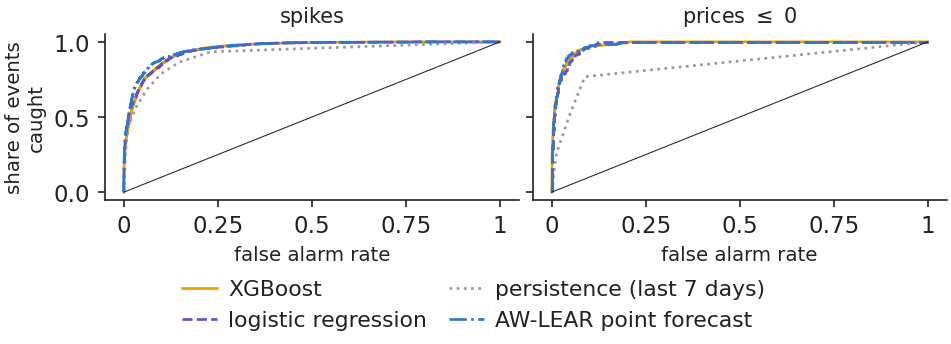
ROC curves of the classifiers and benchmarks on the test year, for spikes (left) and prices at or below zero (right), 8,760 hours.
Source: energy-charts.info (Fraunhofer ISE); Yahoo Finance (EUA). Data: test year 2025-11-01 to 2026-10-31, 8760 hours.
A probability becomes useful only when it is turned into a decision. Take 1 MW of flexible load that can move consumption out of an alerted hour. Acting costs \(C\); a missed spike costs on average \(\bar L\). The classic cost–loss rule (Murphy, 1977) is to act when
where \(C\) = 30 EUR/MWh is the assumed cost of acting and \(\bar L\) = 72.5 EUR/MWh the mean excess of the price over \(\theta\) in the validation year. Moving 1 MWh out of an alerted hour earns \(P_{d,h}-\theta_d-C\).
The chart shows the value of the rule over the test year as a function of the threshold. Per MW and year, the rule at C/L earns 33.0 thousand EUR, persistence 11.8, and perfect foresight 62.4. The best threshold seen afterwards (0.64) would have earned more, but it is hindsight and could not have been chosen in advance.
In practice: set the threshold from your costs; the best one seen afterwards is hindsight.
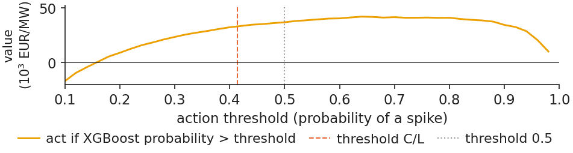
Value per MW and year of acting on spike alerts as a function of the probability threshold, with C/L, persistence and perfect foresight marked; 1 MW of flexible load, C = 30 EUR/MWh.
Source: energy-charts.info (Fraunhofer ISE); Yahoo Finance (EUA). Data: test year 2025-11-01 to 2026-10-31; 1 MW of flexible load.
The case study looks at the week of 27 Jun 2026 – 3 Jul 2026. On 30 Jun 2026, at 20:00 CET, the price reached 954.59 EUR/MWh, the highest price of the test year. All models expected a high price: AW-LEAR forecast 520, XGBoost 499, the DNN 614 and Chronos-2 607 EUR/MWh, and the spike probability was 0.992. None came close to the actual level.
Over the whole week there were 47 spike hours; the rule at C/L raised 45 alerts, and 39 of them were correct. The alert worked; the size of the spike was missed by every model.
In practice: the probability says whether to act, the point forecast how much.
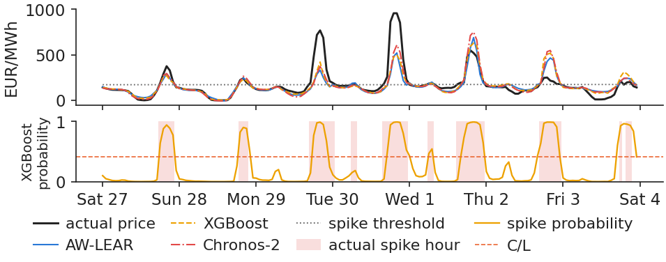
Hourly prices and forecasts of AW-LEAR, XGBoost, the DNN and Chronos-2, 27 Jun – 3 Jul 2026, with alerted hours marked.
The chart breaks the XGBoost forecast for 30 Jun 2026, 20:00 CET, into SHAP contributions in EUR/MWh (Appendix C explains the conversion from the asinh scale). The forecast rises from 125 EUR/MWh, the model average, to 499. The price of \(d-1\) at the same hour adds 213, and the price of \(d-7\) adds 64: the trees followed the extreme evening of the day before.
The breakdown also shows a limit of trees: they cannot go above the prices stored in their leaves, so extremes are capped. A price far above anything seen in training cannot be forecast by a sum of leaf values learnt from the past.
In practice: show the board this breakdown for every large alert.
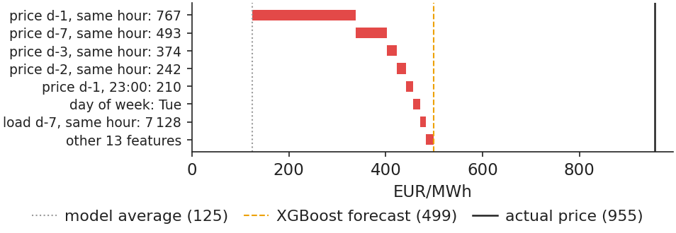
SHAP contributions in EUR/MWh to the XGBoost forecast for 30 Jun 2026, 20:00 CET, from the model average to the forecast.
Andrei, Pele, Cramer, Amza and Diaconu (2026) built an early-warning system for spikes on the Romanian day-ahead market. They used 5,000 hours of 2024 with load, renewable and fuel data, defined a spike as a price above the 90th percentile, and combined random forests and XGBoost explained with SHAP into an early-warning score built from the thresholds of several indicators. They find that the previous price and the residual load forecast are the main drivers of spikes.
Our replication, case study C7, uses only gate-closure information. Over the test period Jul 2025 – Oct 2026, spikes occur in 22.1% of hours (10.0% in training). XGBoost reaches an AUC of 0.946, and its top drivers are yesterday's and last week's price at the same hour, as on the previous slides. The paper's results are as stated in the paper; the replication numbers come from the C7 case notebook on our data.
In practice: a residual-load forecast is the input that a spike model needs most and that our public data lack.
Section summary
Spikes come in the evening and negative prices at midday. A good price forecast already detects spikes, a cost–loss rule turns probabilities into money, and no model foresaw the size of the largest spike.
Pitfalls that flatter a model
Most claims of large gains from machine learning come from evaluation mistakes rather than from better models. This section reproduces three such mistakes on our data, look-ahead, data snooping and frozen models, measures how much each flatters the result, and ends with a self-check for leakage.
Look-ahead: two invalid evaluations flatter XGBoost
The chart compares the honest MAE of XGBoost, 23.26 EUR/MWh, with two invalid evaluations. The first is shuffled 5-fold cross-validation: the days are shuffled before being split, so future days end up in the training sample. The MAE drops to 22.01, 5.4% better, on paper only.
The second uses the load and wind and solar generation of day \(d\) as inputs, labelled renewable energy sources (RES) in the chart. These values are not known at 12:00 on \(d-1\). The MAE becomes 22.55, an apparent gain of 3.1%; it is also an upper bound on what perfect forecasts of these inputs could add.
In practice: ask every vendor for a walk-forward test with each input time-stamped at gate closure.
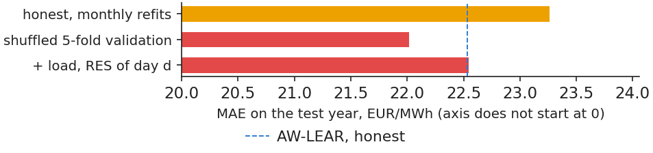
MAE of XGBoost on the test year under the honest walk-forward evaluation, under shuffled 5-fold cross-validation and with same-day load and RES as inputs.
Source: energy-charts.info (Fraunhofer ISE); Yahoo Finance (EUA). Data: test year 2025-11-01 to 2026-10-31.
The honest DNN, chosen on validation and run with 1 seed, has MAE 23.34 EUR/MWh on the test year. If instead we pick the best of the 25 settings directly on the test year, we get 22.52, just below AW-LEAR (22.53): an apparent victory over the statistical benchmark, created only by choosing on the data used for evaluation (White, 2000).
The chart plots the validation MAE of each setting against its test MAE. The rankings agree, with Spearman correlations of 0.86 for the DNN and 0.94 for XGBoost: validation works, but it is not perfect, and the gap is exactly what snooping exploits.
In practice: ask how many models were tried before the one presented: the more trials, the more the best one flatters.
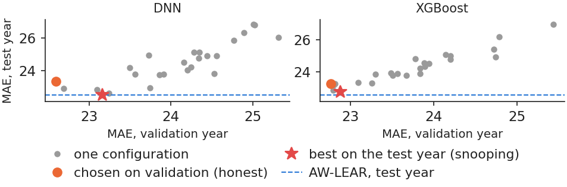
Validation-year MAE against test-year MAE of the 25 settings of each model, one seed per configuration, with AW-LEAR marked.
Source: energy-charts.info (Fraunhofer ISE); Yahoo Finance (EUA). Data: validation and test year 2025-11-01 to 2026-10-31.
Choosing the best of many models on the same data is a multiple-testing problem. With \(m\) independent tests at the 5% level, the probability of at least one false win is \(1-0.95^m\): 0.401 for \(m=10\) and 0.994 for \(m=100\). Chung-Ming Kuan's keynote at AIDA 2026 (slides) presented the tests that control this risk; the content below follows the conference slides.
White's Reality Check (RC) compares every model with the benchmark at once,
where \(d_{k,t}\) is the loss of the benchmark minus the loss of model \(k\) on day \(t\), and the null hypothesis \(E(d_{k,t})\le 0\) for every \(k\) says that no model beats the benchmark. The critical value comes from a bootstrap of the whole vector \((d_{1,t},\dots,d_{m,t})\), which keeps the correlation between the models (White, 2000).
The Reality Check is conservative: poor models added to the set reduce its power (Hansen, 2005).
The superior predictive ability (SPA) test of Hansen (2005) recentres the poor models and is more powerful.
Stepwise versions, Step-RC (Romano & Wolf, 2005) and Step-SPA (Hsu, Hsu & Kuan, 2010), name the models that beat the benchmark while keeping the familywise error rate (FWER) at the chosen level.
On our data, the best of the 25 DNN settings on the test year is just below AW-LEAR: this is exactly the selection that the Reality Check and the SPA test correct for.
In practice: when shown the best of many models, ask for an RC or SPA p-value against your benchmark.
Markets change, so a model must be refitted. The chart compares the monthly-refitted XGBoost with a version fitted once, before the test year, and with a version fitted on a short rolling window. The frozen model has MAE 24.25, 4.2% worse. The loss grows with time: +0.15 EUR/MWh in the first 3 months and +3.70 in the last 3.
A short rolling window of 365 days does even worse (MAE 25.59) than the whole history: the trees need many past spikes to learn from, and a single year does not contain enough of them.
In practice: put the monthly refit in the operating calendar, with an owner, like any other control.
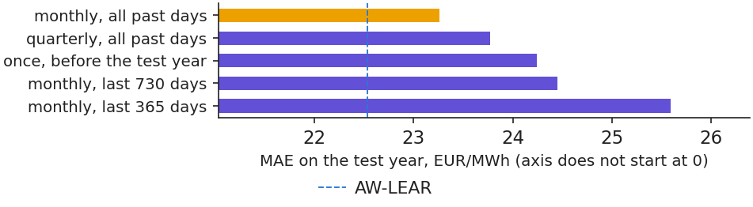
MAE of XGBoost on the test year with monthly refits on all history, fitted once and with a 365-day rolling window, and the monthly gap of the frozen model.
Source: energy-charts.info (Fraunhofer ISE); Yahoo Finance (EUA). Data: test year 2025-11-01 to 2026-10-31.
A simple test shows whether a pipeline leaks information from the future. For the first day of each of the 12 test months, all data after 12:00 on \(d-1\) are deleted, then replaced by 10,000 EUR/MWh. XGBoost, the DNN and the spike classifier are refitted and must give the same forecasts.
They do. The trees and the classifier give identical forecasts, and the DNN differs by less than 0.001 EUR/MWh, a rounding effect of parallel arithmetic. For Chronos, the code checks that the context is built only from days before day \(d\).
The test closes a checklist that applies before trusting any model:
every input time-stamped at gate closure;
settings chosen on a validation year;
one test year, opened once, with DM tests against LEAR;
monthly refits and a perturbation test like this one.
In practice: make this check part of every model review, for statistical and machine-learning models alike.
Section summary
Shuffled cross-validation, same-day inputs and choosing on the test year all make a model look better than it is. A frozen model degrades, and a leakage test with impossible future values shows that the pipeline is clean.
Wrap-up
The lecture closes with five questions that a manager may face, a summary of the results, the research of our group and resources for further study.
A start-up shows a neural network with rMAE 0.70 on Romania, tested with shuffled 5-fold cross-validation. What do you ask for? Answer: a walk-forward test on one untouched year, with inputs known at 12:00 on \(d-1\). On our data, shuffling alone made XGBoost look 5.4% better.
Chronos-2 has the lowest MAE of the single models, and AW-LEAR + Chronos-2 has the same MAE. Which do you deploy? Answer: the combination. It has the same accuracy (DM \(p\) = 0.491), but if the pretrained model degrades or becomes unavailable, LEAR still carries half of the forecast.
Load has a small SHAP share (8.5%). Can we conclude that load does not affect the price? Answer: no. SHAP explains the model, not the market; load enters only with its \(d-2\) value, already reflected in yesterday's price.
Moving 1 MWh costs you 60 EUR instead of 30. How does the alert threshold change? Answer: it doubles. C/L rises from 0.414 to about twice that value, so you act only on the more certain spikes.
Your data team proposes to train the model once a year to save effort. What does the test year say? Answer: a model frozen for the year was 4.2% less accurate, and the gap widened in the last months, while a monthly refit of XGBoost takes about 13 seconds.
Tuned, the DNN and XGBoost improve on Lecture 2 but do not beat AW-LEAR alone; averaged with it, they do, and the gain is significant. Chronos-2, with no training at all, is the most accurate single model, with MAE 20.82, 7.6% below AW-LEAR.
The other lesson is about discipline. Every model, statistical or machine learning, must be explained, validated on data it has not seen and refitted regularly. The pitfalls of the last section show that an evaluation mistake can easily produce a gain larger than the honest gain of the best model.
Research from our group on machine learning for Romanian power prices
Early warning of price spikes (Andrei, Pele, Cramer, Amza and Diaconu, 2026, PICBE): built an explainable artificial intelligence (AI) system for the Romanian day-ahead market and found that the previous price and the residual load drive the spikes; replicated in case study C7.
Explaining price forecasts across horizons (Andrei, Pele and Cramer, 2026, PICBE): explained machine learning forecasts of Romanian hourly prices and showed which drivers matter at each horizon and in each price regime.
Four generations of price models (Andrei, Velev, Toma, Pele and Lessmann, 2024, arXiv): compared four generations of forecasting methods for energy prices, from statistical models to deep learning, as a guide for choosing a model family.
Foundation models for tail risk (Jheng, Tak, Găman, Mazurencu-Marinescu-Pele and Pele, 2026, ECECSR): used pretrained foundation models, without retraining and with conformal calibration, to forecast extreme losses in Central and Eastern European markets.
The findings are as stated in the papers; the numbers in the rest of the lecture come from our own data.
Case study C7 replicates the spike early-warning paper on our data.
Experiment yourself: the notebook of this lecture reproduces every chart and number, in the notebooks folder of the course repository.
Appendix
The appendix gives the derivations behind the training of the network and of the trees, the conversion of SHAP values to euro, and the search spaces of the hyperparameters.
where \(\boldsymbol\delta\) is the derivative of the loss with respect to the outputs, \(\mathbf u=W_1\mathbf x+\mathbf b_1\) the input of the activation, \(\odot\) the element-wise product and \(\phi'\) the derivative of the activation. For the absolute error, \(\partial|y-\hat y|/\partial\hat y=-\operatorname{sign}(y-\hat y)\); for softplus, \(\phi'(u)=1/(1+e^{-u})\).
Adam (Kingma and Ba, 2015) rescales this gradient so that each weight gets its own step size:
where \(g_k\) is the gradient on mini-batch \(k\), \(m_k\) and \(v_k\) moving averages of the gradient and of its square, \(\eta\) the learning rate, and \(\beta_1=0.9\), \(\beta_2=0.999\), \(\varepsilon=10^{-8}\) the default values. Weight decay adds \(\lambda\theta\) to \(g_k\), a quadratic penalty, here with \(\lambda\) = \(10^{-5}\).
Appendix B: why the optimal leaf value is −G/(H+λ)
XGBoost approximates the loss around the current forecast \(F_{m-1}\) by a second-order Taylor expansion:
where \(\ell_i\) is the current loss of observation \(i\), \(g_i\) and \(h_i\) the first and second derivatives of the loss, \(G_j\) and \(H_j\) the sums of \(g_i\) and \(h_i\) over leaf \(j\), \(J\) the number of leaves and \(\lambda\), \(\gamma\) the penalties of (7.10).
Within a leaf, the objective (7.24) is a parabola in \(w_j\); setting its derivative to zero gives \(w_j^*\). The split gain of (7.8) is the score before the split minus the score after it. For the absolute error \(h_i=0\), and XGBoost then sets the leaf values by a line search.
The trees forecast the asinh-scaled price, and SHAP values add up on that scale. To report the contributions in euro, the forecast and the average forecast are transformed back,
where \(m\) and \(s\) are the median and the scaled median absolute deviation (MAD) of the training prices, \(\hat P\) the forecast in EUR/MWh, \(P_0\) the average forecast in EUR/MWh and \(\phi_j^{\text{EUR}}\) the contribution of input \(j\) in euro. The euro gap \(\hat P-P_0\) is shared in proportion to \(\phi_j\). Signs and ranking are unchanged, and the contributions add up exactly to the forecast in EUR/MWh.
For each model, 24 random draws (with a fixed seed) plus the Lecture 2 setting were evaluated; the chosen setting is the one with the lowest MAE on the validation year.
DNN setting
Values tried
Chosen
neurons, layer 1
64, 128, 256, 512
512
neurons, layer 2
0, 32, 64, 128, 256
none
activation
ReLU, softplus
softplus
dropout
0.0; 0.1; 0.2; 0.3
0.1
learning rate
\(3\cdot10^{-4}\); \(10^{-3}\); \(3\cdot10^{-3}\)
\(3\cdot10^{-4}\)
L1 penalty, inputs
0; \(10^{-3}\); \(10^{-2}\); \(10^{-1}\)
0
batch (days)
32, 64, 128
64
load/RES/fundamentals
yes or no
yes/yes/yes
XGBoost setting
Values tried
Chosen
trees
300, 600, 1000, 1500
1500
learning rate \(\eta\)
0.02; 0.05; 0.10
0.02
depth
3, 4, 5, 6, 8
8
min. leaf weight
1, 5, 20, 50
5
rows per tree
0.6; 0.8; 1.0
0.8
\(\lambda\)
0.1; 1.0; 10.0
0.1
loss
square, absolute, Huber
absolute
Abbreviations
AI
artificial intelligence
ARIMA
autoregressive integrated moving average
ARX
autoregressive model with exogenous variables
AUC
area under the ROC curve
AW
averaging across calibration windows
AW-ARX
ARX averaged across calibration windows
AW-LEAR
LEAR averaged across calibration windows
CET
Central European Time
CPU
central processing unit (processor core)
DM
Diebold–Mariano test
DNN
deep neural network
DST
daylight saving time
ENTSO-E
European Network of Transmission System Operators for Electricity
superior predictive ability (test of Hansen, 2005)
TSO
transmission system operator
XGBoost
eXtreme Gradient Boosting (library)
References
Anagnoste, S., Andrei, A.-V., Bolovăneanu, V., Cepoi, C.-O., Clodnitchi, R., Cramer, A.-A., Grecu, R.-A., Lessmann, S., Pele, D. T., Petukhina, A. & Strat, V. A. (2025). The role of AI in (re)shaping energy finance: A systematic literature review. Energy Strategy Reviews, 61, 101833. doi:10.1016/j.esr.2025.101833
Andrei, A.-V., Pele, D.-T. & Cramer, A.-A. (2026). Multi-horizon explainability in energy price forecasting: Disentangling market dynamics and renewable intermittency in Romania's liberalized electricity market. Proceedings of the International Conference on Business Excellence, 20(1), 104–117. doi:10.2478/picbe-2026-0014
Andrei, A.-V., Pele, D.-T., Cramer, A.-A., Amza, A. & Diaconu, D. (2026). Explainable AI-based early warning system for electricity price spikes: Evidence from the Romanian market. Proceedings of the International Conference on Business Excellence, 20(1), 4820–4836. doi:10.2478/picbe-2026-0352
Andrei, A.-V., Velev, G., Toma, F.-M., Pele, D. T. & Lessmann, S. (2024). Energy price modelling: A comparative evaluation of four generations of forecasting methods. arXiv:2411.03372
Andrei, A.-V., Velev, G., Toma, F.-M., Pele, D. T. & Lessmann, S. (2026). Energy price modelling: A comparative evaluation of four generations of forecasting methods. Talk, AIDA Conference, Bucharest University of Economic Studies, 3 June 2026. github.com/danpele/EMQA/resources/aida2026
Ansari, A. F., Stella, L., Turkmen, C. et al. (2024). Chronos: Learning the language of time series. Transactions on Machine Learning Research. arXiv:2403.07815
Ansari, A. F., Shchur, O., Küken, J. et al. (2025). Chronos-2: From univariate to universal forecasting. arXiv:2510.15821
Bates, J. M. & Granger, C. W. J. (1969). The combination of forecasts. Journal of the Operational Research Society, 20(4), 451–468. doi:10.1057/jors.1969.103
Bergmeir, C. & Benítez, J. M. (2012). On the use of cross-validation for time series predictor evaluation. Information Sciences, 191, 192–213. doi:10.1016/j.ins.2011.12.028
Bergstra, J. & Bengio, Y. (2012). Random search for hyper-parameter optimization. Journal of Machine Learning Research, 13, 281–305. jmlr.org/papers/v13/bergstra12a.html
Chen, T. & Guestrin, C. (2016). XGBoost: A scalable tree boosting system. Proceedings of the 22nd ACM SIGKDD Conference, 785–794. doi:10.1145/2939672.2939785
Clodnitchi, R. (2026). The role of AI in (re)shaping energy finance: A systematic literature review. Talk, AIDA Conference, Bucharest University of Economic Studies, 3 June 2026. github.com/danpele/EMQA/resources/aida2026
Diebold, F. X. & Mariano, R. S. (1995). Comparing predictive accuracy. Journal of Business & Economic Statistics, 13(3), 253–263. doi:10.1080/07350015.1995.10524599
Fawcett, T. (2006). An introduction to ROC analysis. Pattern Recognition Letters, 27(8), 861–874. doi:10.1016/j.patrec.2005.10.010
Friedman, J. H. (2001). Greedy function approximation: A gradient boosting machine. Annals of Statistics, 29(5), 1189–1232. doi:10.1214/aos/1013203451
Hansen, P. R. (2005). A test for superior predictive ability. Journal of Business & Economic Statistics, 23(4), 365–380. doi:10.1198/073500105000000063
Hastie, T., Tibshirani, R. & Friedman, J. (2009). The Elements of Statistical Learning, 2nd ed. Springer. doi:10.1007/978-0-387-84858-7
Hsu, P.-H., Hsu, Y.-C. & Kuan, C.-M. (2010). Testing the predictive ability of technical analysis using a new stepwise test without data snooping bias. Journal of Empirical Finance, 17(3), 471–484. doi:10.1016/j.jempfin.2010.01.001
Jheng, S., Tak, R., Găman, Ș., Mazurencu-Marinescu-Pele, M. & Pele, D. T. (2026). Can foundation models manage risk? Zero-shot VaR and ES forecasting with conformal calibration in CEE markets. Economic Computation and Economic Cybernetics Studies and Research, 60(2), 267–290. doi:10.24818/18423264/60.2.26.14
Kingma, D. P. & Ba, J. (2015). Adam: A method for stochastic optimization. International Conference on Learning Representations. arXiv:1412.6980
Kuan, C.-M. (2026). Large-scale multiple inequality testing without data snooping bias. Keynote, AIDA Conference, Bucharest University of Economic Studies, 4 June 2026. github.com/danpele/EMQA/resources/aida2026
Lago, J., De Ridder, F. & De Schutter, B. (2018). Forecasting spot electricity prices: Deep learning approaches and empirical comparison of traditional algorithms. Applied Energy, 221, 386–405. doi:10.1016/j.apenergy.2018.02.069
Lago, J., Marcjasz, G., De Schutter, B. & Weron, R. (2021). Forecasting day-ahead electricity prices: A review of state-of-the-art algorithms, best practices and an open-access benchmark. Applied Energy, 293, 116983. doi:10.1016/j.apenergy.2021.116983
Lundberg, S. M., Erion, G., Chen, H. et al. (2020). From local explanations to global understanding with explainable AI for trees. Nature Machine Intelligence, 2(1), 56–67. doi:10.1038/s42256-019-0138-9
Marcjasz, G., Narajewski, M., Weron, R. & Ziel, F. (2023). Distributional neural networks for electricity price forecasting. Energy Economics, 125, 106843. doi:10.1016/j.eneco.2023.106843
Murphy, A. H. (1977). The value of climatological, categorical and probabilistic forecasts in the cost-loss ratio situation. Monthly Weather Review, 105(7), 803–816. doi:10.1175/1520-0493(1977)105<0803:TVOCCA>2.0.CO;2
Olivares, K. G., Challu, C., Marcjasz, G., Weron, R. & Dubrawski, A. (2023). Neural basis expansion analysis with exogenous variables: Forecasting electricity prices with NBEATSx. International Journal of Forecasting, 39(2), 884–900. doi:10.1016/j.ijforecast.2022.03.001
Romano, J. P. & Wolf, M. (2005). Stepwise multiple testing as formalized data snooping. Econometrica, 73(4), 1237–1282. doi:10.1111/j.1468-0262.2005.00615.x
Shapley, L. S. (1953). A value for n-person games. In Contributions to the Theory of Games II, 307–317. Princeton University Press. doi:10.1515/9781400881970-018
Srivastava, N., Hinton, G., Krizhevsky, A., Sutskever, I. & Salakhutdinov, R. (2014). Dropout: A simple way to prevent neural networks from overfitting. Journal of Machine Learning Research, 15, 1929–1958. jmlr.org/papers/v15/srivastava14a.html
Weron, R. (2014). Electricity price forecasting: A review of the state-of-the-art with a look into the future. International Journal of Forecasting, 30(4), 1030–1081. doi:10.1016/j.ijforecast.2014.08.008
Weron, R. (2026). Machine learning for electricity price forecasting. Keynote, AIDA Conference, Bucharest University of Economic Studies, 4 June 2026. github.com/danpele/EMQA/resources/aida2026
White, H. (2000). A reality check for data snooping. Econometrica, 68(5), 1097–1126. doi:10.1111/1468-0262.00152
Text written for the web version of the lecture; numbers, charts and sources come from the slides and their Quantlets.